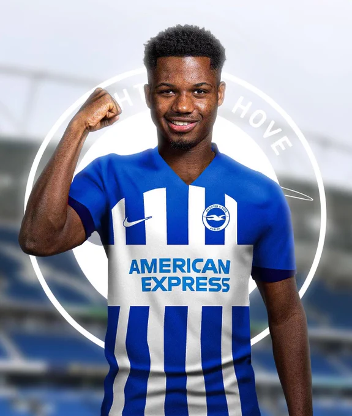
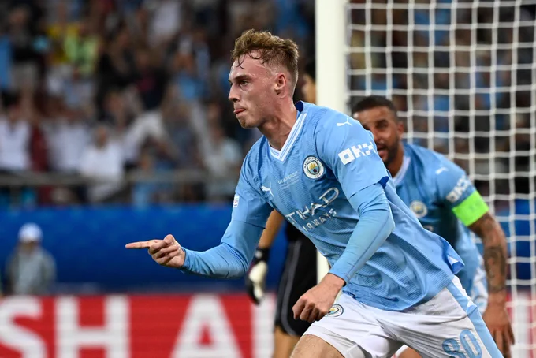
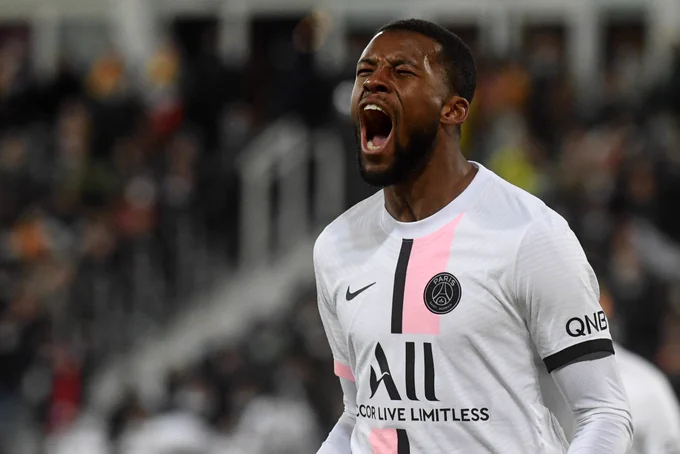

<!-- Ball Task -->
<!DOCTYPE html>
<html>
<head>
    <meta charset="UTF-8">
    <meta name="viewport" content="width=device-width, initial-scale=1.0">
    <link rel="stylesheet" href="hw23.css">
    <title>Bouncing Ball</title>
</head>
<body>
    <div id="ball"></div>
    
    <script src="hw23.js"></script>
</body>
</html>


<!-- Blog Task -->
<!DOCTYPE html>
<html lang="en">
<head>
    <meta charset="UTF-8">
    <meta name="viewport" content="width=device-width, initial-scale=1.0">
    <link rel="stylesheet" href="hw23.css">
    <title>Lesson 23</title>
</head>
<body>
    <header class="header-main">
        <button><a class="a-socnet" href="about.html">About Me</a></button>
        <p class="a-socnet">My Social Networks</p>
        <button><a class="a-socnet" href="https://www.instagram.com/bmsdjnv/">Instagram</a></button>
        <p></p>
        <button><a class="a-socnet" href="https://twitter.com/bmaxmudovich">X</a></button>
    </header>
    <div class="div-article">
        
        <h1 class="h1-article">Ansu Fati joining Brighton</h1>
        <p class="p-article">
            Ansu Fati to Brighton, here we go! Deal in place between #BHAFC and Barça 
            as revealed earlier, verbal agreeement now done 🚨🔵✨

            ◉ NO buy option clause.
            ◉ Loan deal until June 2024.
            ◉ Main part of salary covered.
            
            Travel booked on Thursday, Brighton want it signed ASAP.
        </p>
        <a class="a-article" href="https://twitter.com/FabrizioRomano"> By Fabrizio Romano</a>
    </div>

    <div class="div-article">
        
        <h1 class="h1-article">Cole Palmer joining Chelsea</h1>
        <p class="p-article">
            EXCLUSIVE: Chelsea add Cole Palmer to list of talented offensive players being 
            considered for final addition! 🚨🔵⭐️ #CFC

            Chelsea are set to open talks soon as they see Palmer as best solution.

            It remains to be seen Man City position on Palmer but Chelsea really want him.
        </p>
        <a class="a-article" href="https://twitter.com/FabrizioRomano"> By Fabrizio Romano</a>
    </div>

    <div class="div-article">
        
        <h1 class="h1-article">Georginio Wijnaldum joining Al Ettifaq</h1>
        <p class="p-article">
            Saudi side Al Ettifaq have approached Georginio Wijnaldum over potential 
            late move — he’s out of PSG project 🔴🇸🇦

            Negotiations ongoing, PSG are ready to give the green light. Up to the player.

            Steven Gerrard wants Gini.
        </p>
        <a class="a-article" href="https://twitter.com/FabrizioRomano"> By Fabrizio Romano</a>
    </div>
    <form class="form-main" action="your_mail.html" method="get">
        <input type="text" name="mail" id="mail" placeholder="Your Mail">
        <label for="mail"></label>
        <input type="submit" value="Send">
    </form>
</body>
</html>